Cristiano Ronaldo dos Santos Aveiro was born on 5 February 1985
in Funchal, Madeira, Portugal. From a young age, he showed an
extraordinary passion for football. His talent, determination
and strong work ethic helped him rise from the streets of
Madeira to become one of the greatest footballers in history.
Ronaldo's journey is a true example of how discipline,
self-belief and relentless hard work can turn dreams into
reality.
Spotted by Sporting CP at twelve, he left his island home alone
for Lisbon, overcame a heart condition at fifteen, and signed
for Manchester United in 2003 — where he won his first Ballon
d'Or and became a global star under Sir Alex Ferguson.
From a record £80m move to Real Madrid to Euro 2016 glory with
Portugal and history at five World Cups, his story keeps
inspiring millions.
More about Cristiano Ronaldo...
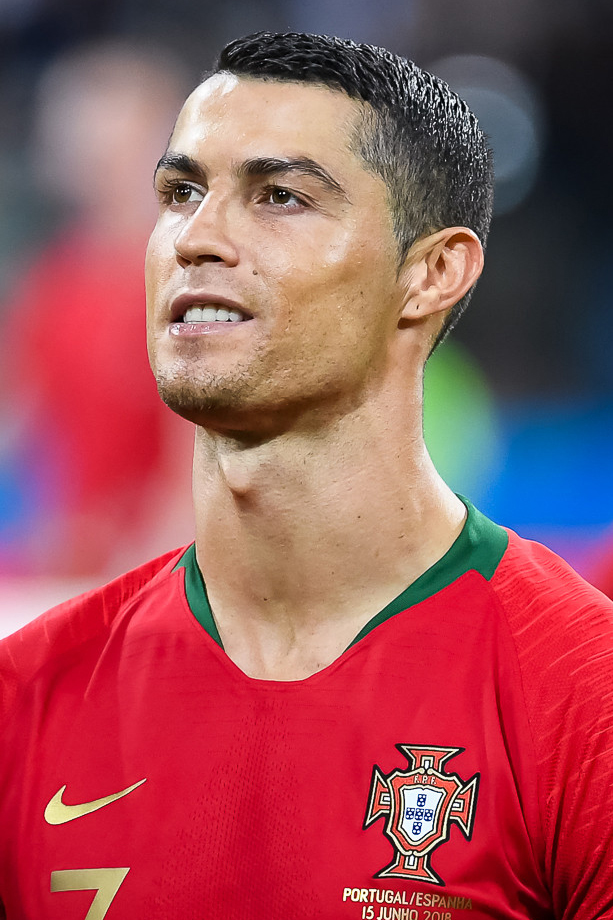
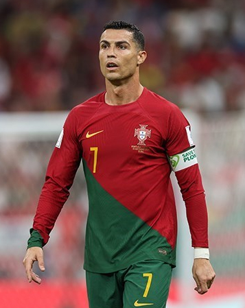
Same Passion Different Stages
Career Journey
A remarkable path
From a young boy in Madeira to a global icon, Ronaldo's journey
across clubs and continents is defined by extraordinary goals,
unforgettable moments and an unshakable will to be the best.
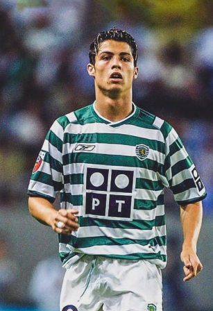
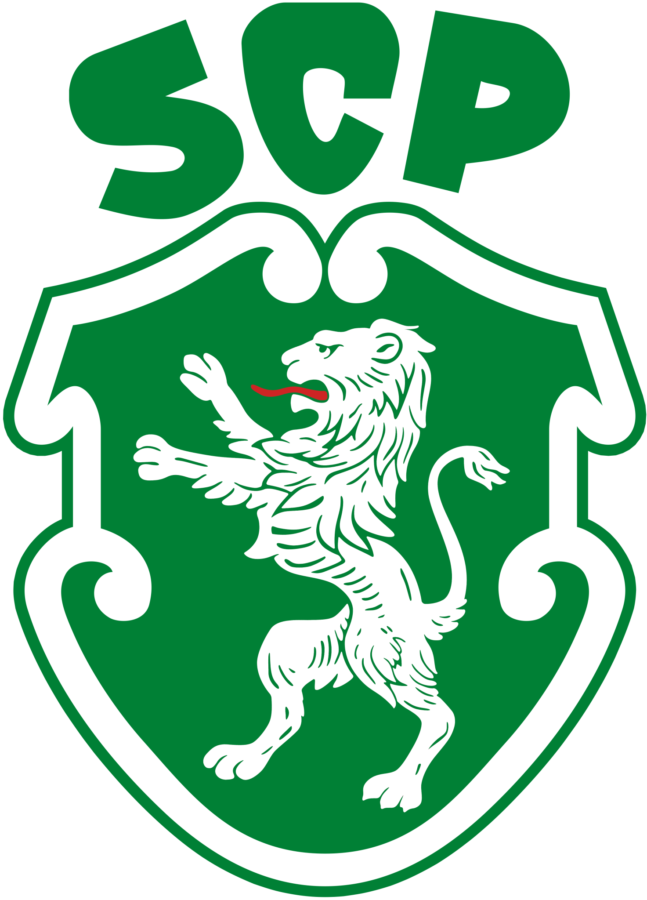
012002 · Sporting CPSenior debut.
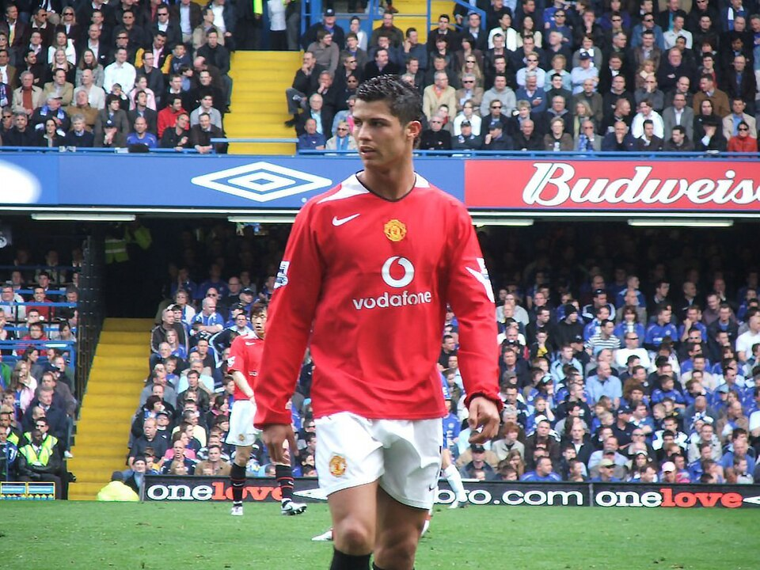
022003 · Manchester UnitedGlobal stardom.
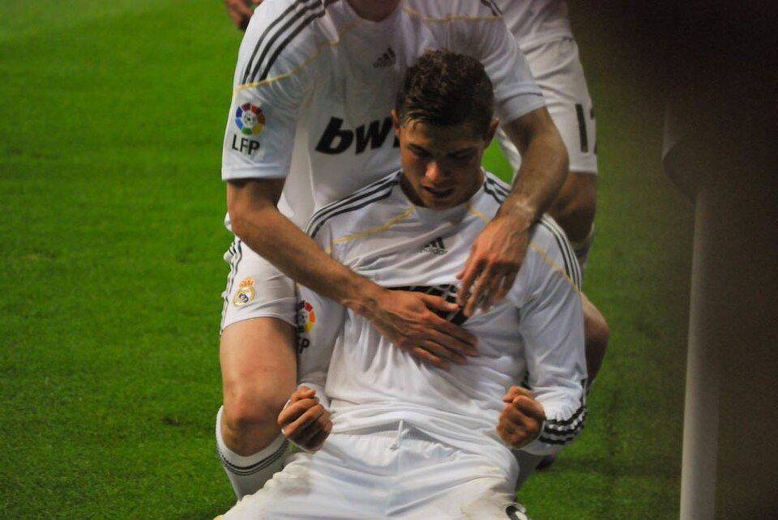
032009 · Real MadridLegendary era.
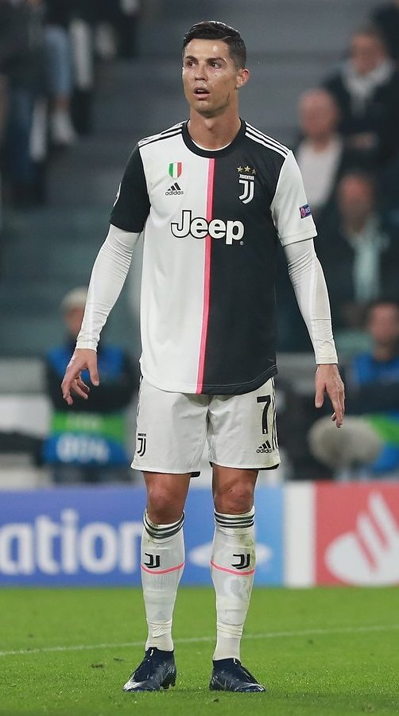
042018 · JuventusNew challenge.
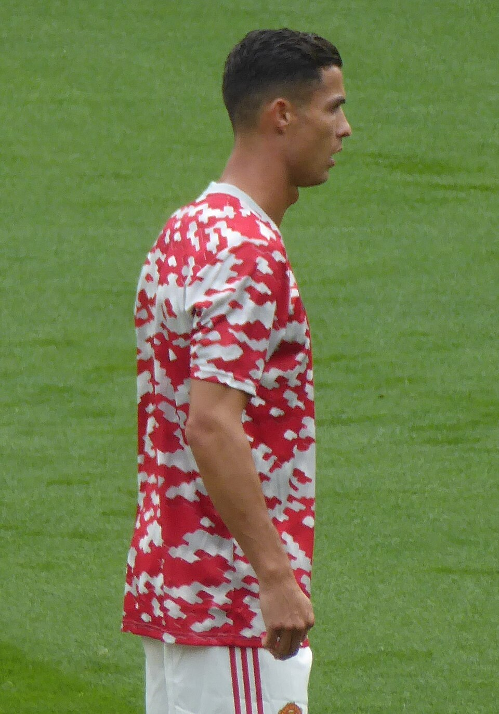
052021 · Manchester UnitedReturn to the Theatre.
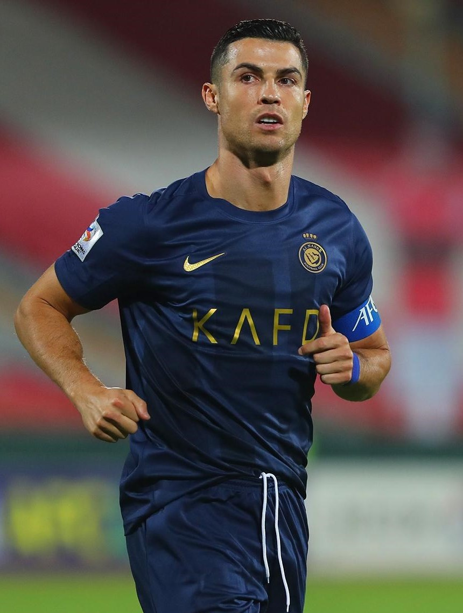
NSR062023 · Al NassrA new chapter.
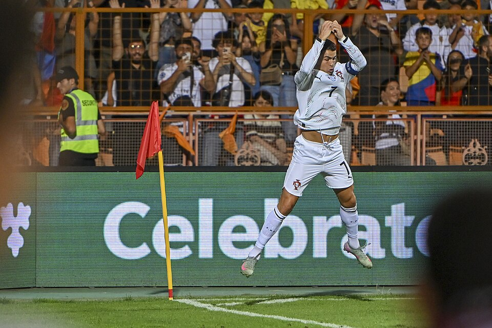
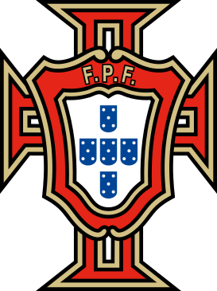
07Portugal · National TeamPride of a nation.
Key Achievements
A record breaking legacy
980+ official goals and counting (October 2026) — the road to
1,000 goes through him.
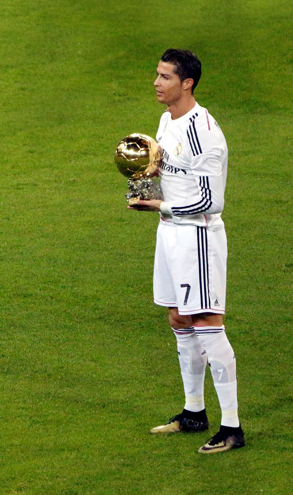
★5Ballon d'Or Awards
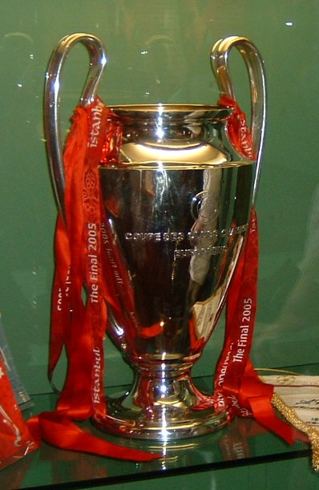
★5UEFA Champions League Titles
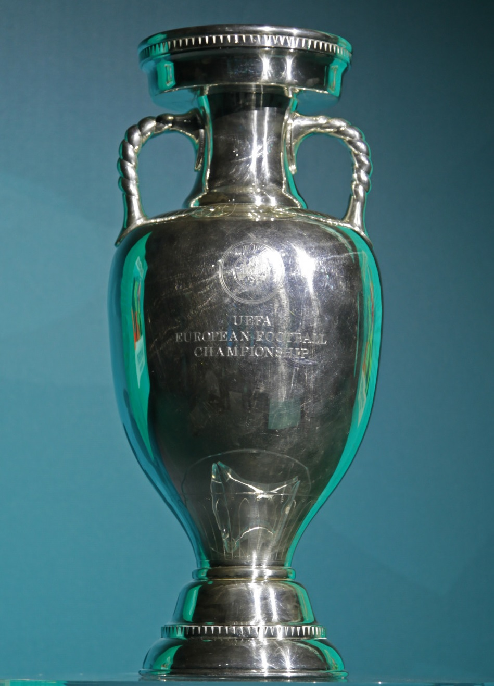
★1UEFA Euro 2016
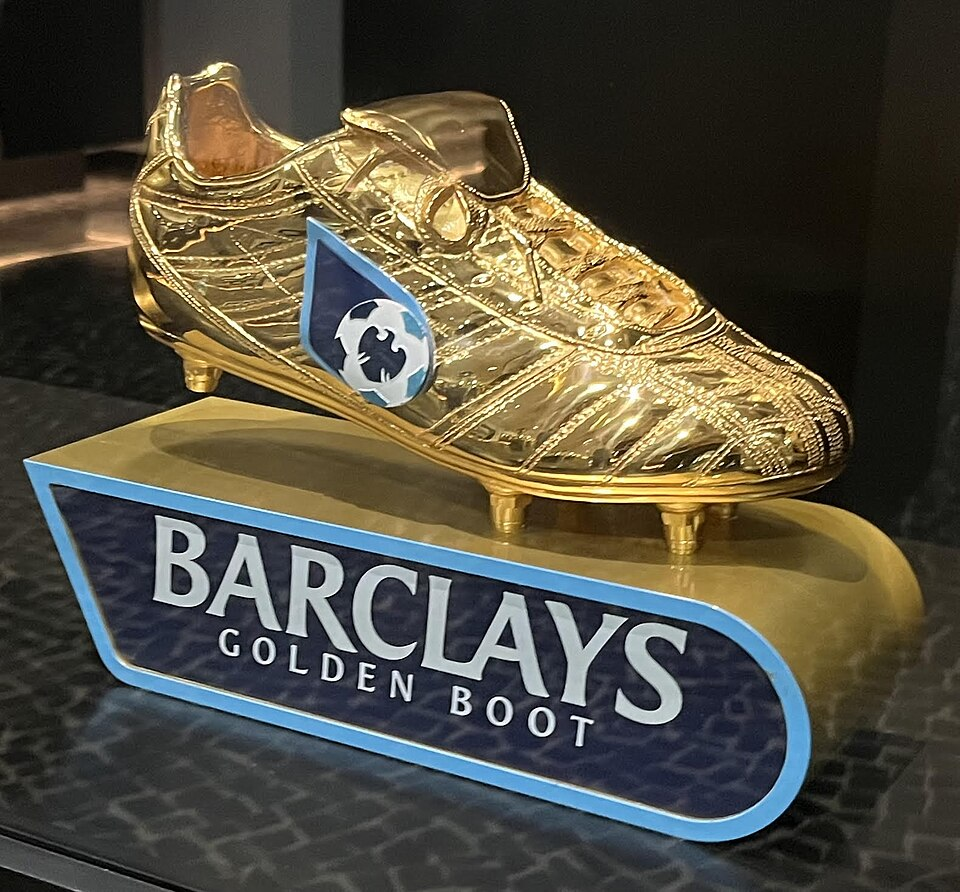
★4European Golden Boots
★980+Career Goals
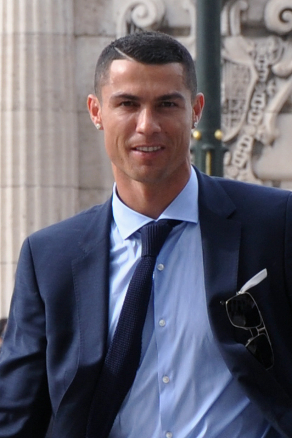
★35+Major Trophies
“
"Your love makes me strong, your hate makes me unstoppable."
— Cristiano Ronaldo
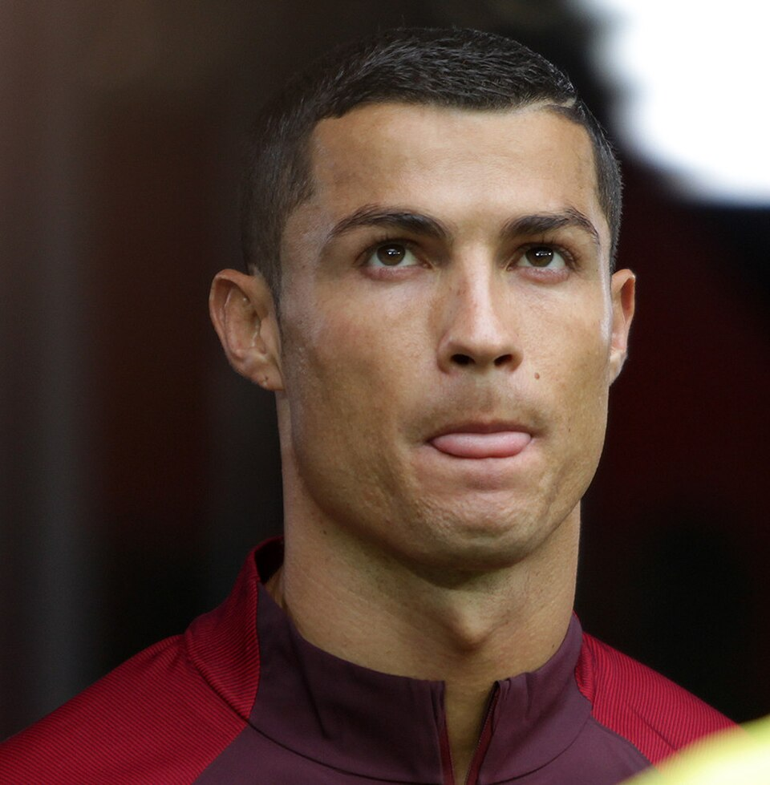
Legacy
More than goals
Cristiano Ronaldo's legacy goes beyond trophies and records. He
is a symbol of discipline, resilience and the belief that with
hard work and determination, anything is possible. His
influence extends to millions of fans, young athletes and
future generations around the world.

 02
2003 · Manchester United
Global stardom.
02
2003 · Manchester United
Global stardom.
 03
2009 · Real Madrid
Legendary era.
03
2009 · Real Madrid
Legendary era.